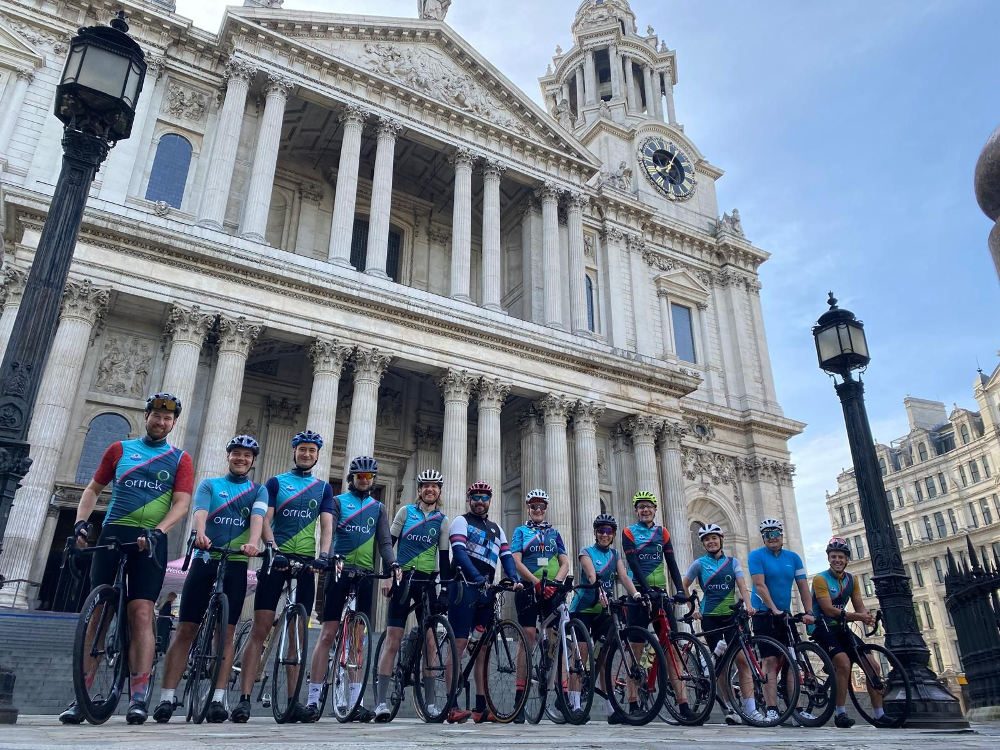
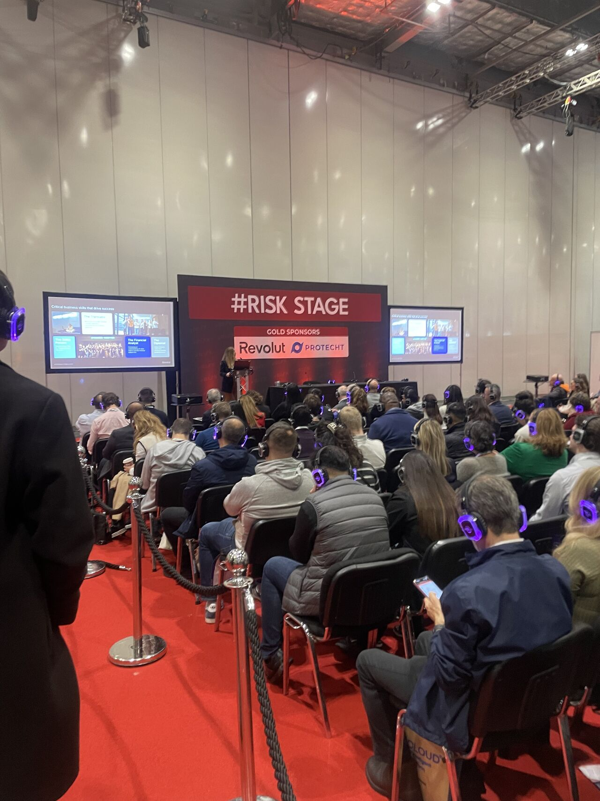
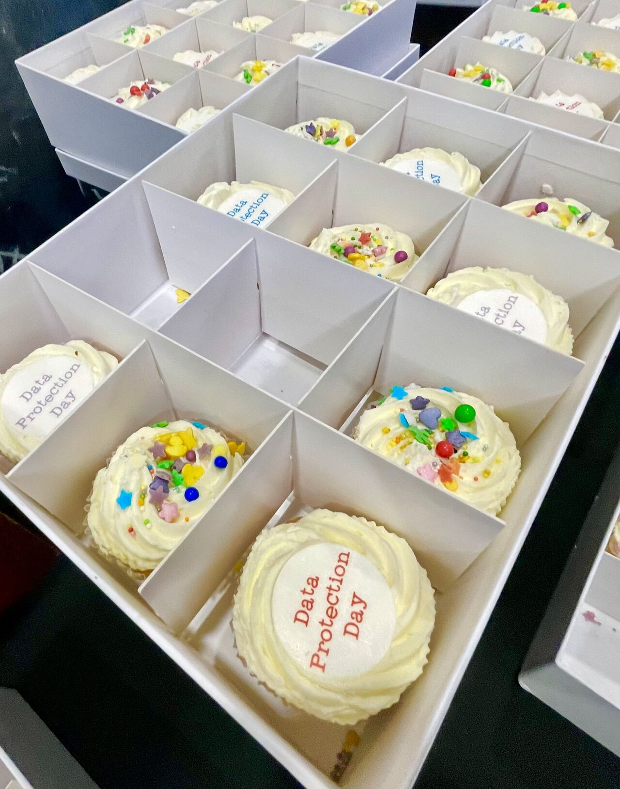
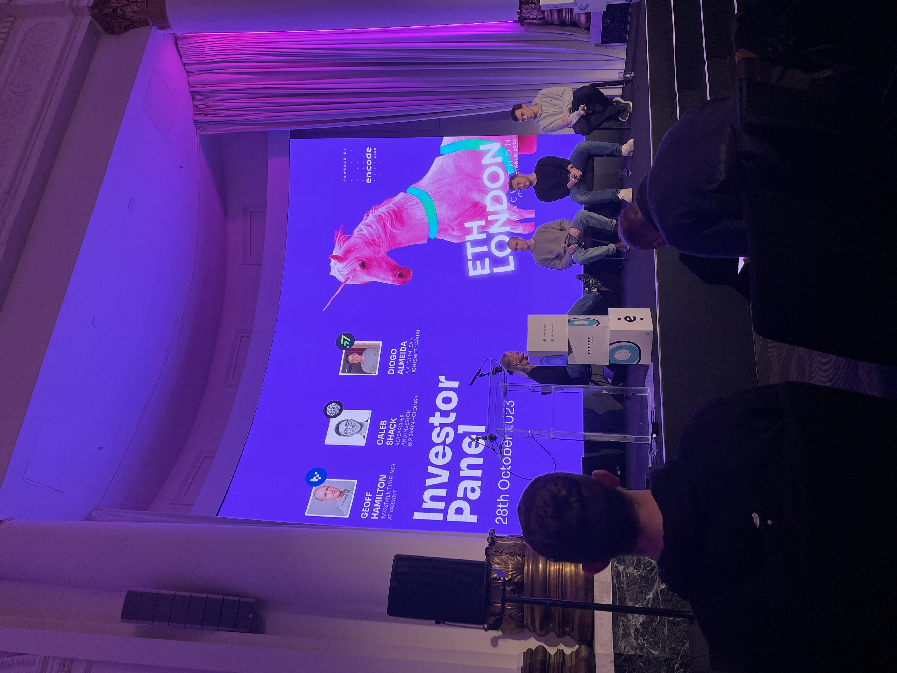

Trainined at one of the world's leading technology law firms, advising on commercial agreements, digital regulation, and corporate VC & M&A.
At Orrick I sat across the firm's core practice areas, developing a commercially grounded skill set shaped by the demands of high-value, cross-border matters. I drafted commercial contracts, advised on UK and EU data protection matters, and supported complex corporate and financing deals.
Throughout my training I consistently demonstrated a commercial mindset, strong written advocacy, and the ability to take ownership of workstreams, lead client interactions and adapt to fast-moving, technically complex matters. I also led training sessions on document automation tools and utilised AI integrations including HarveyAI and Draftwise.



